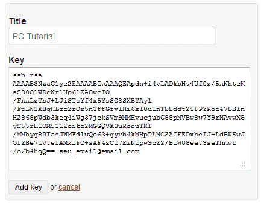
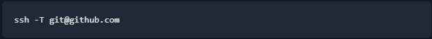
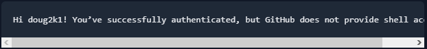
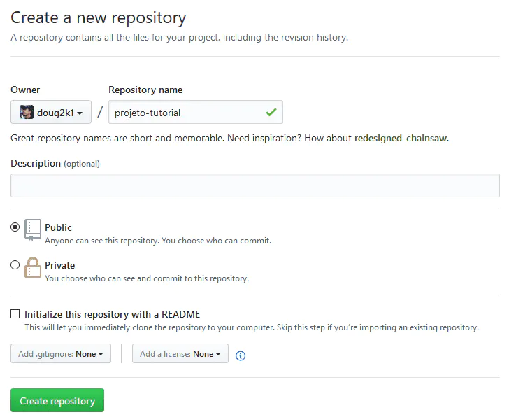
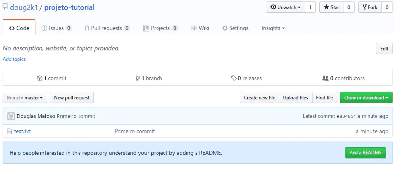

Compartilhando no GitHub
Legal, você tem um repositório Git na sua máquina, mas que tal compartilhar seus códigos no GitHub e usufruir de tudo que essa comunidade tem para oferecer?
1) Preparação Inicial
Vá em https://github.com/ e clique em “Sign Up” para criar sua conta gratuita.
Tendo cadastrado e logado em sua conta, agora você precisa de uma chave SSH para poder começar a comitar. No Git Bash digite:
Informe no comando seu e-mail cadastrado no GitHub. Dê Enter na próxima pergunta (sobre o arquivo a ser criado — vamos deixar o padrão).
A próxima pergunta vai te pedir uma senha (passphrase). Invente uma senha e a informe. Ele vai pedir uma confirmação. Digite a senha novamente e Enter. Digite agora:
para abrir no Bloco de Notas o arquivo que foi criado.
Agora no GitHub, vá em “Settings” e depois “SSH and GPG Keys”. Clique “New SSH key”. Informe um título para identificar o computador onde a a chave foi gerada e no campo “Key” cole todo o conteúdo do arquivo id_rsa.pub (que você abriu no Bloco de Notas)
Tome cuidado de copiar e colar todo o conteúdo do arquivo, começando por “ssh-rsa …” até o seu e-mail (incluindo ele, como na imagem). Clique em “Add Key”.
Vamos testar pra ver se essa bagaça deu certo. No Git Bash digite:
Ele vai perguntar se você tem certeza que quer conectar bla bla bla (yes/no). Digite yes e Enter. Na próxima pergunta (Enter passphrase…) informe sua senha (a que você escolheu ao criar a chave SSH).
Se você receber uma mensagem do tipo:
Então deu tudo certo!
2) Criando o primeiro repositório remoto
No GitHub vamos criar um novo repositório (botão “New Repository” no seu dashboard). Informe um nome sem espaços e caracteres especiais. As outras opções não precisa alterar.
Você cairá na página do seu repositório, que por enquanto ainda não tem arquivos.
Importante! Se o e-mail informado ao Git no início do passo 2 não for o mesmo usado para se cadastrar no GitHub, refaça o comando informando o e-mail cadastrado. Assim o GitHub vai poder ligar os commits à sua conta.
No Git Bash (na pasta do seu repositório local) digite:
Note que login/repositorio deve ser digitado como aparece na URL do seu repositório, no exemplo:
https://github.com/doug2k1/projeto-tutorial
Agora para atualizar o GitHub com o que está no seu repositório local, digite:
Informe a sua senha (da chave SSH) quando pedido.
Recarregue a página do seu repositório e agora, ao invés da mensagem inicial, você verá seus commits e arquivos.
